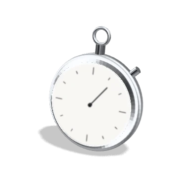

02 · The panel
Only what matters today.
Titles only. Each line opens its detail. Every number lives one tap away in «Datos».
- Lo urgente · the one thing that can't wait, with a «Llamar» button
- Hoy · today's checklist: tick it, or send a photo

Esta semana · each goal and how far you are: «faltan 3» Entrenos, Comida, Piel · what you trained, ate and put on
Entrenos, Comida, Piel · what you trained, ate and put on
Recorded on the real app: the panel opening and scrolling.